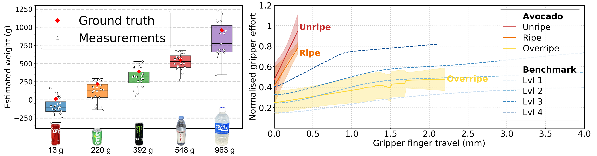

Planner
Checks whether the visual scene contains enough information to solve the task. If not, it proposes candidate physical interactions.

PhysCaP augments Code-as-Policy agents with an exploration loop. The Planner detects missing physical information, the Prioritizer ranks candidate interactions by expected information gain, and executable code calls PhysX modules such as get_mass and get_stiffness.
We present PhysCaP, a Physics-Informed Code-as-Policy agent for active perception in robotic manipulation. While vision-language-action policies excel at imitating demonstrations, they rely on passive observation and fail to infer latent physical properties critical for manipulation. PhysCaP augments code-as-policy frameworks with a physics-informed exploration layer that enables explicit information-seeking through interaction. It introduces training-free physical property extraction modules that estimate object mass and stiffness from robot proprioception without additional sensors. To balance exploration costs and information gain, PhysCaP employs a dual-agent design: a Planner that decides when to explore and when to stop, and a Prioritizer that filters and ranks interactions by expected information gain, enabling efficient, targeted exploration. We evaluate PhysCaP on real-world tabletop manipulation tasks (searching for hidden objects, detecting empty cans, and finding ripe avocados) and a simulated task in LIBERO. The results show that existing passive and naive interactive baselines either fail when physical properties are hidden or over-explore, whereas PhysCaP achieves higher success rates with significantly fewer interactions and reduced execution time. Ablation studies further validate the effectiveness of the proposed physical property extraction modules.
Checks whether the visual scene contains enough information to solve the task. If not, it proposes candidate physical interactions.
Filters implausible or redundant interactions and ranks the remaining candidates to reduce unnecessary robot actions.
Estimates object mass from joint-torque differences during a fixed lift trajectory, using the end-effector Jacobian.
Classifies stiffness from gripper displacement and normalized motor effort, using repeated measurements and majority vote.

The physical property extraction modules estimate task-relevant latent properties from robot proprioception without additional sensing hardware.
Reveal a hidden blue cube under one of several cups while avoiding infeasible cup lifts through visual and geometric reasoning.
Use mass measurements to infer which can is empty when visual cues alone cannot reveal the hidden state.
Use stiffness measurements to identify a ripe avocado among visually similar candidates.
Evaluate the same hidden-property reasoning pattern in a simulated manipulation environment.
| Method | Find Blue Cube | Identify Empty Can | Pick Ripe Avocado | ||||||
|---|---|---|---|---|---|---|---|---|---|
| SR | OI | Time | SR | OI | Time | SR | OI | Time | |
| CaP | 10/10 | 3 | 75.51 +/- 4 s | 2/10 | 2.5 | 71.71 +/- 20 s | 1/10 | 1 | 26.38 +/- 0 s |
| CaP+PhysX | 10/10 | 2.7 | 76.91 +/- 21 s | 7/10 | 3.9 | 268.08 +/- 16 s | 9/10 | 4 | 515.61 +/- 9 s |
| CaP+PhysX+Planner | 9/10 | 3 | 104.11 +/- 26 s | 7/10 | 4 | 274.14 +/- 77 s | 8/10 | 4.125 | 563.29 +/- 76 s |
| PhysCaP-joint | 8/10 | 2.125 | 65.91 +/- 23 s | 7/10 | 2.7 | 241.62 +/- 70 s | 7/10 | 2.71 | 384.39 +/- 111 s |
| PhysCaP | 9/10 | 1.33 | 40.48 +/- 15 s | 8/10 | 2.5 | 239.0 +/- 27 s | 9/10 | 2 | 300.47 +/- 53 s |
SR: success rate. OI: average number of exploratory object interactions on successful trials. Time: robot execution time.
Real-world videos are clipped to highlight the task-relevant interaction sequence.
Evaluate the complete simulation pipeline on hidden-property reasoning.
Run the simulated empty-can task with physical property extraction but no planner-guided exploration.
Use planner-guided physical exploration for the simulated empty-can task.